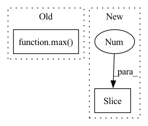

Pattern ID :17635
Before Change
// p4 ─> p4p5 ─> pan_out1
// ↓ ↑
// p3 ─> pan_out2 ───┘
csp_depth = max( round(depth_mul * 2), 1)
p3, p4, p5 = features // p3: [64, 64, 256], p4: [32, 32, 512], p5: [16, 16, 512]
p3 = conv_dw_pw_block(p3, p3.shape[-1] // 2, kernel_size=1, activation=activation, name=name + "p3_down_") // [64, 64, 128]
p4 = conv_dw_pw_block(p4, p4.shape[-1] // 2, kernel_size=1, activation=activation, name=name + "p4_down_") // [32, 32, 256]
After Change
upsamples = [features[-1]]
p_name = "p{}_".format(len(features) + 2)
// upsamples: [p5], features[:-1][::-1]: [p4, p3] -> [p5, p4p5, p3p4p5]
for id, ii in enumerate(features[:-1 ][::-1]):
cur_p_name = "p{}".format(len(features) + 1 - id)
nn = conv_dw_pw_block(ii, ii.shape[-1] // 2, kernel_size=1, activation=activation, name=name + cur_p_name + "_down_")
p_name = cur_p_name + p_nameIn pattern: SUPERPATTERN
Frequency: 3
Non-data size: 2
Instances Fragment ID: 58260424
Project Name: leondgarse/keras_cv_attention_models
Commit Name: bef44f2c07106cb7cf251facb6581ef6220cde48
Time: 2022-03-18
Author: leondgarse@gmail.com
File Name: keras_cv_attention_models/yolor/yolor.py
M Class Name: AnonimousClass
N Class Name: AnonimousClass
M Method Name: path_aggregation_fpn(5)
N Method Name: path_aggregation_fpn(5)
M Parent Class:
N Parent Class:
M File Name: keras_cv_attention_models/yolor/yolor.py
N File Name: keras_cv_attention_models/yolor/yolor.py
M Start Line: 139
M End Line: 152
N Start Line: 204
N End Line: 220
Before Change
return 1
// compute inter-line area, normalize by common bbox
point_count = max( max(len(a.points) // 2, len(b.points) // 2), 5)
a, sa = smooth_line(a.points, point_count)
b, sb = smooth_line(b.points, point_count)
dists = np.linalg.norm(a - b, axis=1)
dists = (dists[:-1] + dists[1:]) * 0.5After Change
dists = np.linalg.norm(a - b, axis=1)
dists = dists[:-1] + dists[1:]
a_steps = np.linalg.norm(a[1:] - a[:-1], axis=1)
b_steps = np.linalg.norm(b[1: ] - b[:-1], axis=1)
// For the common bbox we can"t use
// - the AABB (axis-alinged bbox) of a point set Fragment ID: 58260426
Project Name: openvinotoolkit/datumaro
Commit Name: 4b53be73721c23738592db619b89fdb1cc18f2fe
Time: 2021-12-22
Author: maxim.zhiltsov@intel.com
File Name: datumaro/components/operations.py
M Class Name: LineMatcher
N Class Name: LineMatcher
M Method Name: distance(2)
N Method Name: distance(2)
M Parent Class: _ShapeMatcher
N Parent Class: _ShapeMatcher
M File Name: datumaro/components/operations.py
N File Name: datumaro/components/operations.py
M Start Line: 771
M End Line: 785
N Start Line: 776
N End Line: 809
Before Change
for weight, bias in tree_parameters:
hidden_one_size = max(hidden_one_size, weight[0].shape[0])
hidden_two_size = max( hidden_two_size, weight[2].shape[0])
n_trees = len(tree_parameters)
weight_1 = np.zeros((n_trees, hidden_one_size))
bias_1 = np.zeros((n_trees, hidden_one_size))After Change
for i, (weight, bias) in enumerate(tree_parameters):
if len(weight[0]) > 0:
weight_1[i, 0 : weight[0].shape[0], 0 : weight[0].shape[1]] = weight[0]
bias_1[i, 0 : bias[0].shape[0]] = bias[0]
weight_2[i, 0 : weight[1].shape[0], 0 : weight[1].shape[1]] = weight[1]
bias_2[i, 0 : bias[1].shape[0]] = bias[1] Fragment ID: 58260427
Project Name: microsoft/hummingbird
Commit Name: c525c51060a58cb848a4f866b2d844963ada1f94
Time: 2021-02-02
Author: m.interlandi@gmail.com
File Name: hummingbird/ml/operator_converters/_tree_implementations.py
M Class Name: GEMMTreeImpl
N Class Name: GEMMTreeImpl
M Method Name: __init__(7)
N Method Name: __init__(8)
M Parent Class: AbstractPyTorchTreeImpl
N Parent Class: AbstractPyTorchTreeImpl
M File Name: hummingbird/ml/operator_converters/_tree_implementations.py
N File Name: hummingbird/ml/operator_converters/_tree_implementations.py
M Start Line: 101
M End Line: 156
N Start Line: 106
N End Line: 135